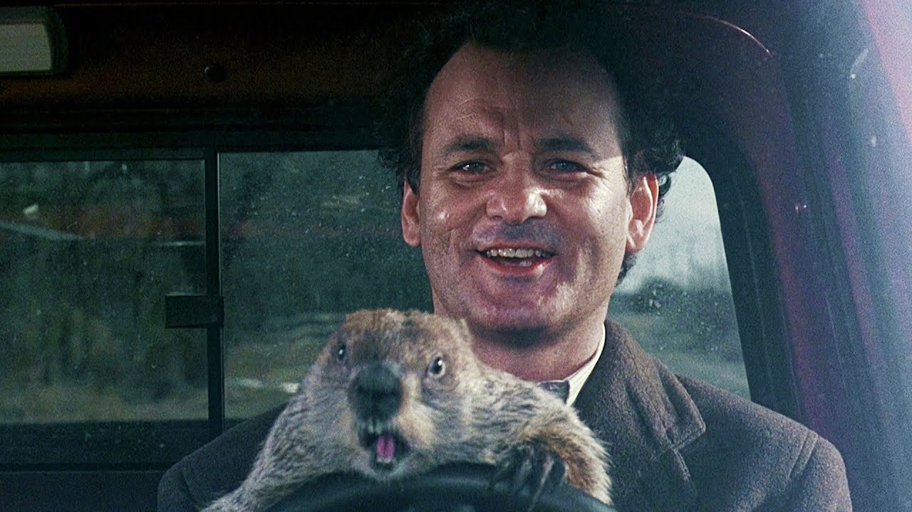
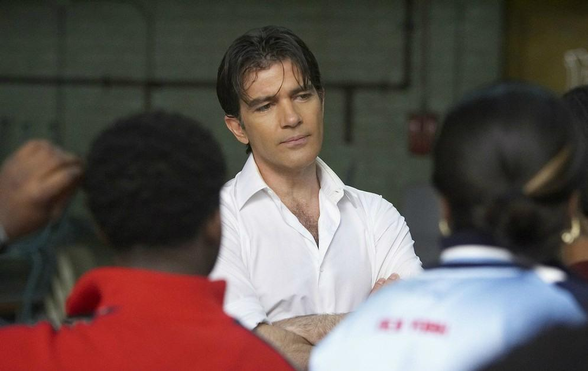
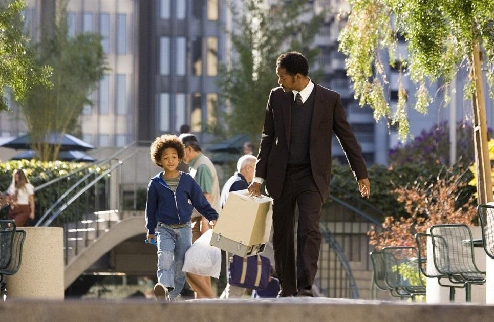
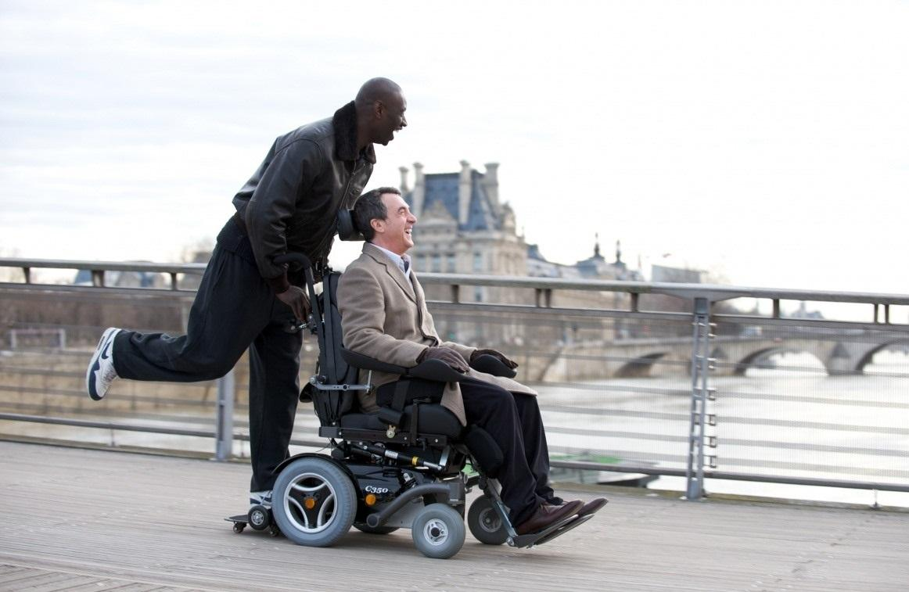
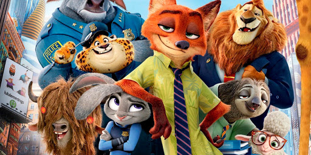
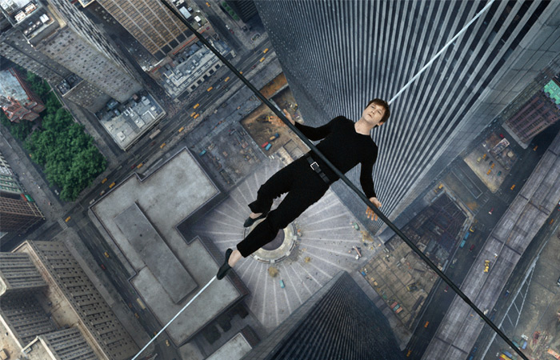

Если настроение и мотивация учиться и работать на нуле, наступил мотивационный кризис, и вы не знаете как выйти из этого состояния. Здесь собраны фильмы, которые смогут помочь вернуть вам боевой настрой. Хорошее кино не просто развлекает, но и окрыляет, вселяют надежду, дает силы идти вперед и верить в лучшее.

Телевизионный комментатор Фил Коннорс каждый год приезжает в маленький городок в штате Пенсильвания на празднование Дня сурка. Но на этот раз веселье рискует зайти слишком далеко. Время сыграло с ним злую шутку: оно взяло да и остановилось.
Теперь на календаре Фила чернеет одна и та же дата - 2 февраля, из которой он никак не может выбраться. Неунывающий ведущий пытается извлечь выгоду из своего комичного положения: впереди у него уйма времени и безмятежное предсказуемое будущее.
Отныне с ним не случится ничего плохого... и ничего хорошего. У Фила осталась одна заветная мечта, простая и незамысловатая - 3 февраля...
Фильм основан на реальных событиях. Профессиональный танцор Пьер Дюлэйн (Антонио Бандерас) становится преподавателем танцев для хулиганов, оставленных после уроков, в Нью-Йоркской общеобразовательной школе. Но его ученики предпочитают хип-хоп, и классические танцы им неинтересны.
Для того, чтобы заслужить расположение учеников, Пьеру приходится разделить их интерес к хип-хопу. После этого совместными усилиями они создают новый танцевальный стиль. Бывшие хулиганы обретают веру в себя и участвуют в ежегодном соревновании по бальным танцам.

Сюжет фильма рассказывает о противостоянии двух легендарных теннисистов, которые сошлись в финальном матче Уимблдона в 1980 году. Бьорн Болг является первой ракеткой мира и добился уже множество побед, но его соперник Джон Макинрой тоже показывает великолепные результаты и имеет многомиллионную армию поклонников. Это действительно одни из лучших спортсменов в мире и каждый из них заслуживает поднять над головой главный трофей.
Перед важнейшим матчем в своей карьере они испытывают огромное давление со стороны тренеров, прессы и фанатов. Они проделали огромную работу и теперь только финальная игра поставит точку в их противостоянии...
В основе сюжета лежит правдивая история Криса Гарднера, 28-летнего отца-одиночки из США, прошедшего путь от коммивояжера-неудачника до успешного финансового брокера. Чтобы выбраться из нищеты и построить успешную карьеру, герою приходится ежедневно прилагать нечеловеческие усилия в преодолении трудностей.


Кого состоятельный аристократ, прикованный к инвалидному креслу, назначит в качестве своей сиделки? Как ни странно, выбор пострадавшего от несчастного случая Филиппа падает на молодого человека из предместья — Дрисса. Новоиспеченный помощник недавно вышел из тюрьмы и готов использовать выпавший ему шанс.
Добро пожаловать в Зверополис – современный город, населенный самыми разными животными, от огромных слонов до крошечных мышек. Зверополис разделен на районы, полностью повторяющие естественную среду обитания разных жителей – здесь есть и элитный район Площадь Сахары и неприветливый Тундратаун. В этом городе появляется новый офицер полиции, жизнерадостная зайчиха Джуди Хоппс, которая с первых дней работы понимает, как сложно быть маленькой и пушистой среди больших и сильных полицейских. Джуди хватается за первую же возможность проявить себя, несмотря на то, что ее партнером будет болтливый хитрый лис Ник Уайлд. Вдвоем им предстоит раскрыть сложное дело, от которого будет зависеть судьба всех обитателей Зверополиса.


Вы боитесь высоты? А можете представить себя идущим по натянутому канату на высоте более 400м без всякой страховки? Потоки ветра обдувают вас, а внизу - город и тысячи взволнованных взглядов, устремленных вверх.
История о том, как французский канатоходец Филипп Пети отважился совершить легендарный трюк - пройти без страховки по канату, натянутому между небоскребами в Нью-Йорке.